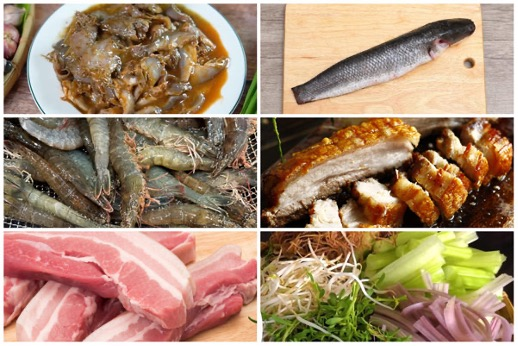
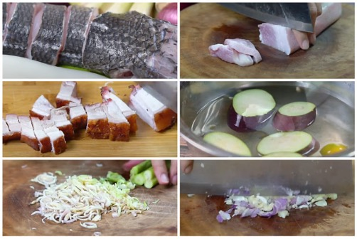
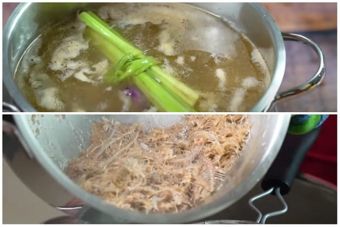
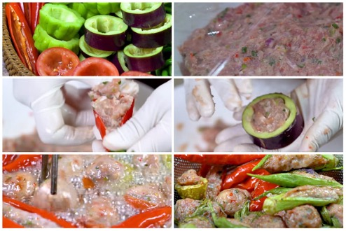
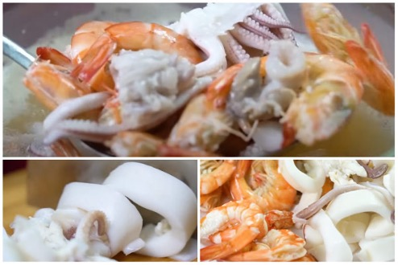
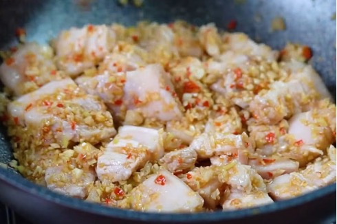
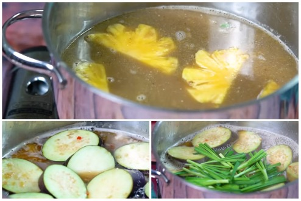

Ingredients
Meats:
- 300g linh fish fermented fish sauce
- 300g snakehead fish fermented fish sauce
- 800g snakehead fish
- 300g squid
- 200g fresh shrimp
- 200g pork belly
- 100g roasted pork
- 300g fish paste
- 150g ground pork
Vegetables:
- ½ pineapple
- 2 eggplants
- 3 bird's eye chilies
- 7 chili peppers
- 2 bitter melons
- 8 okra pods
- 3 tomatoes
- 100g chives
- 3 shallots
- 6 cloves of garlic
- 6 stalks of lemongrass
- Vegetables for noodle soup: shredded water spinach, lotus flowers, water mimosa, bitter herbs, bean sprouts, etc.
- Aromatic herbs: western basil, Thai basil, Vietnamese coriander, perilla, etc.
- 100g fresh rice vermicelli
- Seasonings: rock sugar, tamarind fish sauce, fish sauce, salt, sugar, MSG, etc.

Instructions
Meat preperation:
- Wash the snakehead fish, remove the internal organs, scales, and fins. Cut the fish into moderately thick pieces.
- Clean the squid, rinse with salt water, and then wash with clean water.
- Rinse the pork belly with salt and cut into thin slices.
- Slice the roasted pork into moderately thick pieces.
- Wash the eggplant and cut into chunks.
- Peel the pineapple, remove the eyes, and cut into large pieces.
- Smash and finely chop the lemongrass.
- Mince the shallots and garlic.
- Finely chop the bird's eye chili and 1 chili pepper.

Cooking fish sauce:
- Add 1 liter of water to a pot, then add both types of fermented fish sauce.
- Add 3 shallots and 3 stalks of smashed lemongrass to the pot.
- Cook the fish sauce over medium heat until it boils, then reduce the heat and skim off the scum.
- Use a strainer to filter out the fish paste and discard the bones.
- Tip: When cooking the fish sauce to extract the broth, avoid adding too much water, as this will dilute the flavor of the fish sauce.

Make the stuffed bitter melon, eggplant, and chili:
- Cut the tomatoes in half horizontally and remove the seeds.
- Slice the bitter melon into 4 cm thick rounds and remove the seeds.
- Slice the eggplant into 4 cm rounds, then use a spoon or small knife to scoop out the flesh. Soak the eggplant in a bowl of salted lemon water to prevent discoloration.
- Use a knife to make a vertical slit along the okra and chili peppers, then remove the seeds.
- Place the fish paste (chả cá thác lác) into a bowl, add chopped green onions, and mix well. Then, transfer the fish paste into a plastic bag. Add 1 teaspoon of seasoning powder, ½ teaspoon of sugar, ½ teaspoon of pepper, 1/3 teaspoon of MSG, and 1 teaspoon of cooking oil.
- Use your hands to knead the fish paste thoroughly, ensuring it absorbs the seasoning. Then, add ½ teaspoon of fish sauce and mix again.
- Next, use a spoon to stuff the fish paste into the prepared chilies, bitter melon, eggplant, and tomatoes. Continue until all the fish paste is used up.
- Once the stuffing is done, heat about 3 tablespoons of oil in a pan. When the oil is hot, carefully place the stuffed chilies in and fry until both sides are golden brown. Once cooked, remove and place on a plate to drain excess oil.

Boil the Seafood:
- In a pot, add 1.5 liters of water, ½ teaspoon of salt, ½ teaspoon of sugar, along with 3 stalks of lemongrass and 3 shallots.
- Once the water is hot, add the fish and boil for about 5 minutes, until the fish is cooked. Then, remove the fish and let it cool.
- Next, add the squid and shrimp to the pot and cook until just done, then immediately remove and let them cool.
- Slice the squid into small rings and peel the shrimp.

Stir-fry the Pork Belly:
- Heat a pot and add 3 tablespoons of cooking oil. Add the lemongrass, shallots, garlic, and chopped chili, and sauté until fragrant.
- Add the pork belly and stir-fry until it is just cooked through, making sure not to overcook it.

Prepare the Broth:
- Pour the seafood broth into the filtered fish sauce broth, and add the pineapple. Simmer over low heat.
- Season with 3 tablespoons of sugar and ½ tablespoon of MSG. Let it cook for about 15 minutes. After 15 minutes, remove the pineapple.
- Add the stir-fried pork belly with shallots and lemongrass.
- Then, add the eggplant and stir-fry for 1 minute before turning off the heat.
- Finally, add the chives.
- Note: The saltiness of different types of fish sauce can vary, so make sure to taste and adjust the seasoning to suit your preference while cooking.

Serve and enjoy the dish!
- Place a portion of rice vermicelli into a bowl, then add the fish, shrimp, squid, roasted pork, stuffed chili, and a few sprigs of bitter herbs.
- Next, ladle in the broth until the bowl is filled.
The completed fermented fish noodle soup will have a clear broth with a rich, savory, and subtly sweet flavor from the combination of various ingredients. The balance of flavors will provide an incredibly delicious experience. Don't forget to prepare a plate of fresh herbs to enjoy with the noodles.
- With this simple method for making Western-style fermented fish noodle soup, you definitely need to try it and experience this amazing flavor!